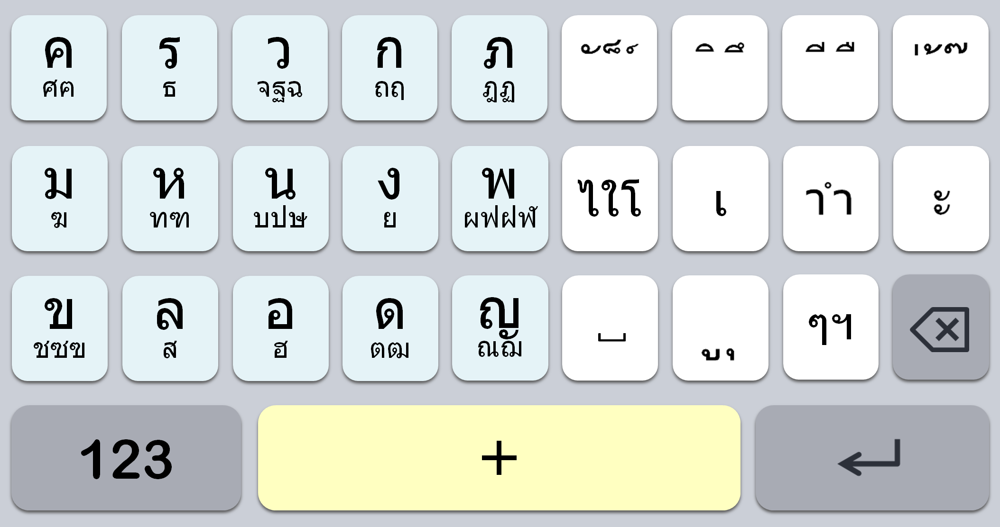
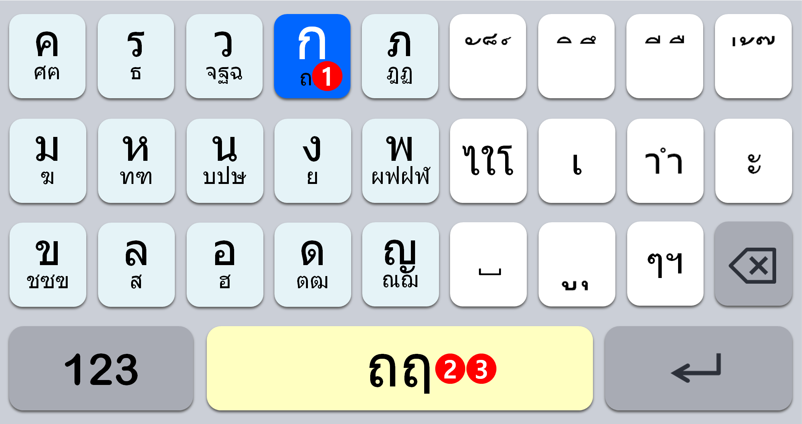
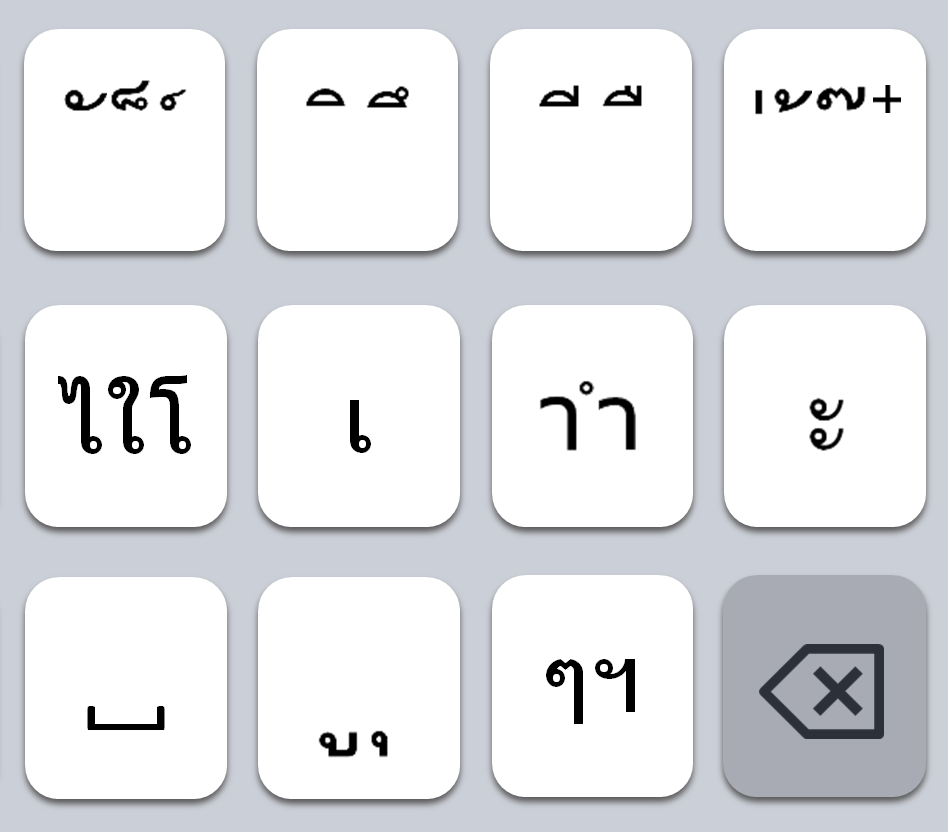
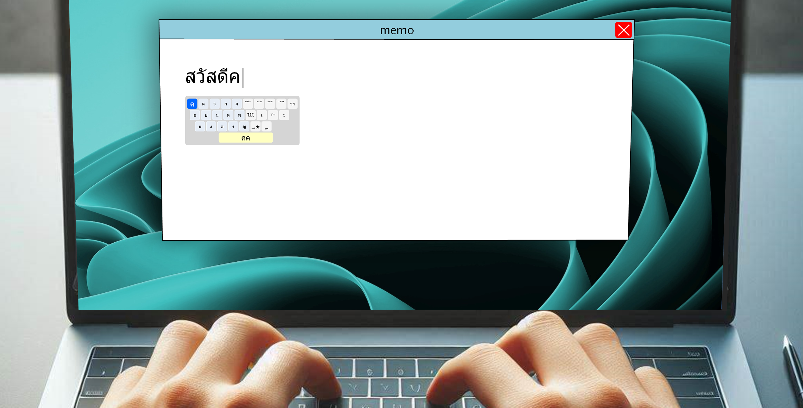

ประกาศอิสรภาพ
แห่งคีย์บอร์ดไทย



บัวคี (Buakey) มีออปชันแสดงผังแป้นพิมพ์ขนาดเล็กบนหน้าจอ เพียงติดตั้งโปรแกรมก็เริ่มใช้งานบนคีย์บอร์ดเดิมได้ทันที เนื่องจากมีปุ่มที่ต้องจำน้อยมาก หากฝึกพิมพ์โดยดูผังเพียงไม่กี่วัน คุณจะสามารถพิมพ์สัมผัสได้โดยไม่ต้องมองแป้น
